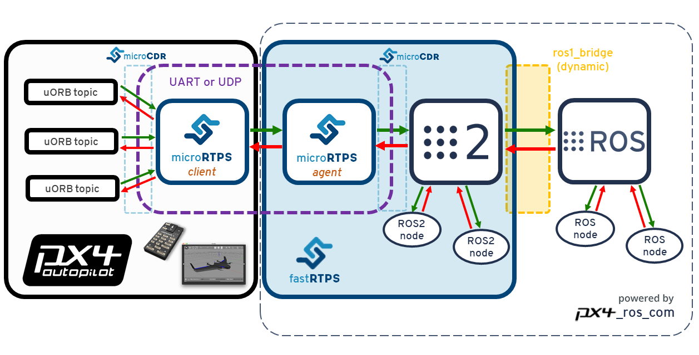

RTPS/ROS2 接口：PX4-FastRTPS桥接
PX4-fastRTPS 桥接 在 PX4 中添加了一个实时发布订阅 (RTPS) 接口, 从而能够在PX4组件和 (offboard) Fast RTPS 应用程序 (包括使用 ROS2/ROS 框架构建的应用程序) 之间进行 uORB 消息 交换。
RTPS是对象管理组 (OMG) 数据分发服务(DDS) 标准的基础协议。 其目的是利用发布/订阅模式实现可扩展、实时、可靠、高性能和可互操作的数据通信。 Fast RTPS 是最新版本的RTPS协议和最小DDS API的一个非常轻量级的跨平台实现。
RTPS 已被采用为 ROS2 (机器人操作系统) 的中间件。 Fast RTPS桥接 使我们能够更好地与 ROS2 集成, 从而轻松共享传感器值、命令和其他车辆信息。
本主题介绍RTPS桥接体系结构 (以及如何在 ROS2/ROS 应用程序管道中使用它)。 还演示了如何编译所需的代码, 以便:
- 编写一个简单的 Fast rtps 应用程序来订阅PX4消息
- 在PX4上连接ROS2节点 (通过RTPS桥接, 并使用
px4_ros_com包) - 如果要在PX4上连接ROS (ROS "1代")，需要额外使用
ros1_bridge包在ROS2和ROS之间做桥接。
什么时候应该使用 RTPS？
当您需要在飞行控制器和offboard部件之间可靠地共享时间敏感/实时信息时, 应使用RTPS。 特别是, 在off-board软件需要 (通过发送和接收 uORB主题) 成为 px4 中运行的软件组件的 伙伴 的情况下，它非常有用。
可能的使用案例包括为实现机器视觉与机器人库进行的通信, 还使用在其它对实时性要求高的领域，比如向执行器发送数据和从传感器获取数据，这对于飞机控制是必需的。
Fast RTPS 并无取代MAVLink之意。 MAVLink 仍然是与地面站、云台、摄像机和其他offboard组件进行通信的首选协议 (尽管 Fast rtps 为使用某些外设提供了第二个选择)。
RTPS可以用于较慢的链接 (例如无线数传), 但应注意不要使通道过载。
架构概述
RTPS 桥接
RTPS 桥接在 PX4 和 RTPS 应用程序之间交换消息, 在每个系统使用的 uORB 和 RTPS 消息之间无缝转换。

该体系结构的主要元素是上面图中所示的客户端 (client) 和代理 (agent) 进程。
- Client 是在飞行控制器上运行的 PX4 中间件守护进程。 它订阅由其他 PX4 组件发布的 uORB 主题, 并将更新发送给 Agent (通过 UART 或 UDP 端口)。 它还接收来自 Agent 的消息, 转换为 PX4 上的 uORB 消息并重新发布。
- Agent 在Offboard计算机上作为守护进程运行。 它监视来自 Client 的 uORB 消息更新, 并通过RTPS (重新) 发布这些消息。 它还订阅来自其他 RTPS 应用程序的 "uORB" RTPS 消息, 并直接转发给 Client。
- Agent 和 Client 通过串行链路 (UART) 或 UDP 网络进行连接。 uORB 信息事先经过了 CDR 序列化 处理 (CDR 序列化 提供了一种在不同平台之间交换串行数据的通用格式)。
- Agent 和任何 Fast RTPS 应用程序之间都是通过 UDP 连接的, 二者可以运行在同一设备上，也可以运行在不同设备上。 在一种典型的配置中, 它们运行于同一系统 (例如, 开发计算机、Linux 配套计算机或计算机板) 上, 通过 Wifi或 USB 连接到 Client。
ROS2/ROS 应用处理流程
ROS2 的应用程序流程非常简单直接! 由于 ROS2 原生支持 DDS/RTPS 作为其原生通信中间件, 因此您可以直接创建 ROS2 监听或广播节点, 通过 PX4 Fast RTPS 桥接 订阅或发布PX4上的 uORB 数据。 正如下图所示。
您需要确保客户端和代理端（以及 ROS 节点上）的消息类型、头文件和源文件是从相同的接口描述语言（IDL）文件生成的。
px4_ros_com包提供了生成 ROS2 所需的消息和头文件所需的必要工具。
将 ROS 应用程序与 PX4 集成的体系结构如下所示。

请注意 ros1_bridge的使用, 它在 ROS2 和 ROS 之间进行消息桥接。 因为 ROS 一代不支持 RTPS，所以只能这样做。
代码生成
Fast RTPS 1.8.2 and FastRTPSGen 1.0.4 or later must be installed in order to generate the required code!
独立于 ROS 的应用程序
All the code needed to create, build and use the bridge is automatically generated when PX4-Autopilot is compiled.
Client 应用程序也被编译成为固件的一部分，这是标准编译过程的一部分。 但是Agent 必须为目标机单独/手动编译。
桥接的代码也可以 手动生成。 大多数用户不需要这样做, 但链接的主题提供了编译过程的更详细的描述, 排故的时候也许有用。
ROS2/ROS 应用
完成编译的 px4_ros_com 包可以生成从一个ROS2节点获取 PX4 uORB消息所需的所有组件 (如果使用 ROS一代，还需要 ros1_bridge)。 This includes all the required components of the PX4 RTPS bridge, including the micrortps_agent and the IDL files (required by the micrortps_agent).
The ROS and ROS2 message definition headers and interfaces are generated from the px4_msgs package, which match the uORB messages counterparts under PX4-Autopilot. These are required by px4_ros_com when generating the IDL files to be used by the micrortps_agent.
Both px4_ros_com and px4_msgs packages have two separate branches:
- 一个支持 ROS2 的
master分支。 该分支的代码可以生成在 PX4 和 ROS2 之间桥接必需的所有 ROS2 消息和 IDL 文件。 - 一个支持 ROS 一代的
ros1分支。 该分支的代码可以生成 ROS 消息的头文件和源文件，这些文件与ros1_bridge一起 使用，达到在PX4与ROS之间共享数据的目的。
Both branches in px4_ros_com additionally include some example listener and advertiser example nodes.
支持的 uORB 消息
The generated bridge code will enable a specified subset of uORB topics to be published/subscribed via RTPS. This is true for both ROS or non-ROS applications.
For automatic code generation there's a yaml definition file in the PX4 PX4-Autopilot/msg/tools/ directory called uorb_rtps_message_ids.yaml. This file defines the set of uORB messages to be used with RTPS, whether the messages are to be sent, received or both, and the RTPS ID for the message to be used in DDS/RTPS middleware.
所有消息都必须分配一个 RTPS ID 。
rtps:
- msg: actuator_armed
id: 0
- msg: actuator_control
id: 1
- ...
- msg: airspeed
id: 5
send: true
- msg: battery_status
id: 6
send: true
- msg: camera_capture
id: 7
- msg: camera_trigger
id: 8
receive: true
- ...
- msg: sensor_baro
id: 63
receive: true
send: true
An API change in ROS2 Dashing means that we now use the
rosidl_generate_interfaces()CMake module (inpx4_msgs) to generate the IDL files that we require for microRTPS agent generation (inpx4_ros_com). PX4-Autopilot includes a template for the IDL file generation, which is only used during the PX4 build process.The
px4_msgsbuild generates slightly different IDL files for use with ROS2/ROS (than are built for PX4 firmware). uorb_rtps_message_ids.yaml 文件将消息改名使之符合PascalCased标准 (改名这事儿与客户端-代理端之间的通信没有任何关系，但是对于 ROS2 是至关重要的，因为 ROS2 的消息命名必须符合 PascalCase 约定)。 新的IDL文件还反转了消息的发送/接收状态 (这是必须的，因为同一个消息在客户端是发送，在代理端的状态就是接收，反之亦然)。
Client (PX4/PX4-Autopilot)
The Client source code is generated, compiled and built into the PX4 firmware as part of the normal build process.
To build the firmware for NuttX/Pixhawk flight controllers use the _rtps feature in the configuration target. For example, to build RTPS for px4_fmu-v4:
make px4_fmu-v4_rtps
To build the firmware for a SITL target:
make px4_sitl_rtps
The Client application can be launched from NuttShell/System Console. The command syntax is shown below (you can specify a variable number of arguments):
> micrortps_client start|stop|status [options]
-t <transport> [UART|UDP] Default UART
-d <device> UART device. Default /dev/ttyACM0
-l <loops> How many iterations will this program have. -1 for infinite. Default -1.
-w <sleep_time_ms> Time in ms for which each iteration sleep. Default 1ms
-b <baudrate> UART device baudrate. Default 460800
-p <poll_ms> Time in ms to poll over UART. Default 1ms
-r <reception port> UDP port for receiving. Default 2019
-s <sending port> UDP port for sending. Default 2020
-i <ip_address> Select IP address (remote) values: <x.x.x.x>. Default: 127.0.0.1
默认情况下Client 作为守护进程运行, 但您需要手动启动它。 PX4 固件的初始化代码将来可能会自动启动 Client 作为一个永久的守护进程。
For example, in order to run the Client daemon with SITL connecting to the Agent via UDP, start the daemon as shown:
micrortps_client start -t UDP
与 ROS 无关的 Offboard Fast RTPS 接口中的代理端
The Agent code is automatically generated when you build the associated PX4 firmware. You can find the source here: build/
To build the Agent application, compile the code:
cd build/<target-platform>/src/modules/micrortps_bridge/micrortps_client/micrortps_agent
mkdir build && cd build
cmake ..
make
如果要交叉编译 Qualcomm Snapdragon Flight 平台，请参考 这个链接。
The command syntax for the Agent is listed below:
$ ./micrortps_agent [options]
-t <transport> [UART|UDP] 缺省为UART.
-d <device> UART设备， 缺省为 /dev/ttyACM0。
-w <sleep_time_us> 每次循环的休眠时间，单位us。 默认 1ms。
-b <baudrate> UART设备波特率。 默认 460800。
-p <poll_ms> UART设备轮询时间，单位ms， 缺省为 1ms。
-r <reception port> UDP 接收端口， 缺省为 2019。
-s <sending port> UDP发送端口， 缺省为 2020。
To launch the Agent, run micrortps_agent with appropriate options for specifying the connection to the Client (the default options connect from a Linux device to the Client over a UART port).
As an example, to start the micrortps_agent with connection through UDP, issue:
./micrortps_agent -t UDP
面向 ROS2 中间件的代理端接口
Building px4_ros_com automatically generates and builds the agent application, though it requires (as a dependency), that the px4_msgs package also gets build on the same ROS2 workspace (or overlaid from another ROS2 workspace). Since it is also installed using the colcon build tools, running it works exactly the same way as the above. Check the Building the px4_ros_com package for details about the build structure.
Building the px4_ros_com and px4_msgs package
Install and setup both ROS2 and ROS environments on your development machine and separately clone the px4_ros_com and px4_msgs repo for both the master and ros1 branches (see above for more information).
ROS2只需要master分支 (但ROS两个分支都需要)。
分别安装 ROS 和 ROS2
This install and build guide covers ROS Melodic and ROS2 Dashing (ROS2 Ardent, Bouncy or Crystal are not covered as they are EOL).
In order to install ROS Melodic and ROS2 Dashing (officially supported) on a Ubuntu 18.04 machine, follow the links below, respectively:
- 安装 ROS Melodic
- Install ROS2 Dashing
The install process should also install the colcon build tools, but in case that doesn't happen, you can install the tools manually:
sudo apt install python3-colcon-common-extensionseigen3_cmake_module is also required, since Eigen3 is used on the transforms library:
sudo apt install ros-dashing-eigen3-cmake-modulesetuptools must also be installed (using pip or apt):
sudo pip3 install -U setuptoolsDo not install the
ros1_bridgepackage through the deb repository. The package must be built from source.
配置工作空间
Since the ROS2 and ROS require different environments you will need a separate workspace for each ROS version. As an example:
对于 ROS2, 如下创建工作空间:
mkdir -p ~/px4_ros_com_ros2/src然后，把 ROS2 (
master) 分支克隆到/src目录:$ git clone https://github.com/PX4/px4_ros_com.git ~/px4_ros_com_ros2/src/px4_ros_com # clones the master branch $ git clone https://github.com/PX4/px4_msgs.git ~/px4_ros_com_ros2/src/px4_msgs对于 ROS, 遵循同样的流程, 但是要另建一个目录并克隆另一个分支:
mkdir -p ~/px4_ros_com_ros1/src然后，克隆 ROS2 (
ros1) 分支到/src目录:$ git clone https://github.com/PX4/px4_ros_com.git ~/px4_ros_com_ros1/src/px4_ros_com -b ros1 # clones the 'ros1' branch $ git clone https://github.com/PX4/px4_msgs.git ~/px4_ros_com_ros1/src/px4_msgs -b ros1
构建工作空间
The directory px4_ros_com/scripts contains multiple scripts that can be used to build both workspaces.
To build both workspaces with a single script, use the build_all.bash. Check the usage with source build_all.bash --help. The most common way of using it is by passing the ROS(1) workspace directory path and also the PX4-Autopilot directory path:
$ source build_all.bash --ros1_ws_dir <path/to/px4_ros_com_ros1/ws>
Using the
--verboseargument will allow you to see the full colcon build output.Note The build process will open new tabs on the console, corresponding to different stages of the build process that need to have different environment configurations sourced.
One can also use the following individual scripts in order to build the individual parts:
build_ros1_bridge.bash可以构建ros1_bridge;build_ros1_workspace.bash(only on theros1branch ofpx4_ros_com), to build the ROS1 workspace to where thepx4_ros_comandpx4_msgsros1branches were cloned;build_ros2_workspace.bash, to build the ROS2 workspace to where thepx4_ros_comandpx4_msgsmasterbranches were cloned;
The steps below show how to manually build the packages (provided for your information/better understanding only):
cd到px4_ros_com_ros2目录并 source 一下 ROS2 的环境变量。 不用管是否提示您该工作空间已经设置过：source /opt/ros/dashing/setup.bash克隆
ros1_bridge程序包到 ROS2 工作空间:git clone https://github.com/ros2/ros1_bridge.git -b dashing ~/px4_ros_com_ros2/src/ros1_bridgeBuild the
px4_ros_comandpx4_msgspackages, excluding theros1_bridgepackage:colcon build --symlink-install --packages-skip ros1_bridge --event-handlers console_direct+--event-handlers console_direct+参数只是为了让colcon将构建过程的详细信息打印出来，如果想要 "安静的" 构建过程，可以去掉该参数。然后，按照 ROS(1) 程序包的构建流程进行编译。 For that, one requires to open a new terminal window and source the ROS(1) environment that has installed on the system:
source /opt/ros/melodic/setup.bashOn the terminal of the previous step, build the
px4_ros_comandpx4_msgspackages on the ROS end:cd ~/px4_ros_com_ros1 && colcon build --symlink-install --event-handlers console_direct+Before building the
ros1_bridge, one needs to open a new terminal and then source the environments and workspaces following the order below:source ~/px4_ros_com_ros1/install/setup.bash source ~/px4_ros_com_ros2/install/setup.bash最后，编译
ros1_bridge。 请注意, 构建过程可能会占用大量内存资源。 在内存较小的机器上, 减少并行编译的线程数目 (比如可以设置环境变量MAKEFLAGS=-j1)。 要查看编译过程的更详细信息，请移步 ros1_bridge程序包的网页。cd ~/px4_ros_com_ros2 && colcon build --symlink-install --packages-select ros1_bridge --cmake-force-configure --event-handlers console_direct+
清理工作空间
After building the workspaces there are many files that must be deleted before you can do a clean/fresh build (for example, after you have changed some code and want to rebuild). Unfortunately colcon does not currently have a way of cleaning the generated build, install and log directories, so these directories must be deleted manually.
The clean_all.bash script (in px4_ros_com/scripts) is provided to ease this cleaning process. The most common way of using it is by passing it the ROS(1) workspace directory path (since it's usually not on the default path):
$ source clean_all.bash --ros1_ws_dir <path/to/px4_ros_com_ros1/ws>
创建一个 Fast RTPS 监听应用
一旦 Client (在飞行控制器上) 和 Agent (在一台 offboard 计算机上) 同时运行并且成功互联, Fast RTPS 应用就可以通过 RTPS 发布或订阅PX4 上的 uORB 消息。
下面这个例子演示了怎样创建一个订阅了 sensor_combined 主题并打印 (来自PX4) 的消息更新的 Fast RTPS "监听" 应用。 一个已连接的 RTPS 应用可以在与 Agent 同一网段的任何计算机上运行。 在这个例子中 Agent and 监听应用 在同一台计算机上运行。
fastrtpsgen 脚本可以从 IDL 消息文件创建一个简单的 RTPS 应用。
RTPS messages are defined in IDL files and compiled to C++ using fastrtpsgen. As part of building the bridge code, IDL files are generated for the uORB message files that may be sent/received (see build/BUILDPLATFORM/src/modules/micrortps_bridge/micrortps_agent/idl/*.idl). These IDL files are needed when you create a Fast RTPS application to communicate with PX4.
输入以下命令来创建应用：
cd /path/to/PX4/PX4-Autopilot/build/px4_sitl_rtps/src/modules/micrortps_bridge
mkdir micrortps_listener
cd micrortps_listener
fastrtpsgen -example x64Linux2.6gcc ../micrortps_client/micrortps_agent/idl/sensor_combined.idl
这段代码创建了一个基本的订阅器和广播器，和一个运行它们的主程序。 要打印来自 sensor_combined 主题的数据, 修改 sensor_combined_Subscriber.cxx 文件中的 onNewDataMessage() 方法。
void sensor_combined_Subscriber::SubListener::onNewDataMessage(Subscriber* sub)
{
// Take data
sensor_combined_ st;
if(sub->takeNextData(&st, &m_info))
{
if(m_info.sampleKind == ALIVE)
{
// Print your structure data here.
++n_msg;
std::cout << "\n\n\n\n\n\n\n\n\n\n";
std::cout << "Sample received, count=" << n_msg << std::endl;
std::cout << "=============================" << std::endl;
std::cout << "gyro_rad: " << st.gyro_rad().at(0);
std::cout << ", " << st.gyro_rad().at(1);
std::cout << ", " << st.gyro_rad().at(2) << std::endl;
std::cout << "gyro_integral_dt: " << st.gyro_integral_dt() << std::endl;
std::cout << "accelerometer_timestamp_relative: " << st.accelerometer_timestamp_relative() << std::endl;
std::cout << "accelerometer_m_s2: " << st.accelerometer_m_s2().at(0);
std::cout << ", " << st.accelerometer_m_s2().at(1);
std::cout << ", " << st.accelerometer_m_s2().at(2) << std::endl;
std::cout << "accelerometer_integral_dt: " << st.accelerometer_integral_dt() << std::endl;
std::cout << "magnetometer_timestamp_relative: " << st.magnetometer_timestamp_relative() << std::endl;
std::cout << "magnetometer_ga: " << st.magnetometer_ga().at(0);
std::cout << ", " << st.magnetometer_ga().at(1);
std::cout << ", " << st.magnetometer_ga().at(2) << std::endl;
std::cout << "baro_timestamp_relative: " << st.baro_timestamp_relative() << std::endl;
std::cout << "baro_alt_meter: " << st.baro_alt_meter() << std::endl;
std::cout << "baro_temp_celcius: " << st.baro_temp_celcius() << std::endl;
}
}
}
要在Linux上构建并运行该应用：
make -f makefile_x64Linux2.6gcc
bin/*/sensor_combined_PublisherSubscriber subscriber
然后就可以看到打印出的传感器信息：
Sample received, count=10119
Received sensor_combined data
=============================
gyro_rad: -0.0103228, 0.0140477, 0.000319406
gyro_integral_dt: 0.004
accelerometer_timestamp_relative: 0
accelerometer_m_s2: -2.82708, -6.34799, -7.41101
accelerometer_integral_dt: 0.004
magnetometer_timestamp_relative: -10210
magnetometer_ga: 0.60171, 0.0405879, -0.040995
baro_timestamp_relative: -17469
baro_alt_meter: 368.647
baro_temp_celcius: 43.93
If the Listener application does not print anything, make sure the Client is running.
创建一个 ROS2 监听器
With the px4_ros_com built successfully, one can now take advantage of the generated micro-RTPS agent app and also from the generated sources and headers of the ROS2 msgs from px4_msgs, which represent a one-to-one matching with the uORB counterparts.
要在 ROS2 上创建一个监听器, 让我们以 sensor_combined_listener.cpp node under px4_ros_com/src/listeners 作为举例：
#include <rclcpp/rclcpp.hpp>
#include <px4_msgs/msg/sensor_combined.hpp>
上面两行代码将与ROS2中间件交互的 C++ 库包含进来。 同时还包含了我们要用到的消息头文件。
/**
* @brief Sensor Combined uORB topic data callback
*/
class SensorCombinedListener : public rclcpp::Node
{
上面这行代码创建了一个子类 SensorCombinedListener， 继承自 rclcpp::Node 基类。
public:
explicit SensorCombinedListener() : Node("sensor_combined_listener") {
subscription_ = this->create_subscription<px4_msgs::msg::SensorCombined>(
"SensorCombined_PubSubTopic", 10,
[this](const px4_msgs::msg::SensorCombined::UniquePtr msg) {
std::cout << "\n\n\n\n\n\n\n\n\n\n\n\n\n\n\n\n\n\n\n\n\n\n\n\n";
std::cout << "RECEIVED SENSOR COMBINED DATA" << std::endl;
std::cout << "=============================" << std::endl;
std::cout << "ts: " << msg->timestamp << std::endl;
std::cout << "gyro_rad[0]: " << msg->gyro_rad[0] << std::endl;
std::cout << "gyro_rad[1]: " << msg->gyro_rad[1] << std::endl;
std::cout << "gyro_rad[2]: " << msg->gyro_rad[2] << std::endl;
std::cout << "gyro_integral_dt: " << msg->gyro_integral_dt << std::endl;
std::cout << "accelerometer_timestamp_relative: " << msg->accelerometer_timestamp_relative << std::endl;
std::cout << "accelerometer_m_s2[0]: " << msg->accelerometer_m_s2[0] << std::endl;
std::cout << "accelerometer_m_s2[1]: " << msg->accelerometer_m_s2[1] << std::endl;
std::cout << "accelerometer_m_s2[2]: " << msg->accelerometer_m_s2[2] << std::endl;
std::cout << "accelerometer_integral_dt: " << msg->accelerometer_integral_dt << std::endl;
});
}
This creates a callback function for when the sensor_combined uORB messages are received (now as DDS messages). 一旦收到消息就打印出每一个字段。
private:
rclcpp::Subscription<px4_msgs::msg::SensorCombined>::SharedPtr subscription_;
};
上面这段代码创建了 sensor_combined_topic 主题的订阅，可以匹配到一个或多个该消息的 ROS 广播者上。
int main(int argc, char *argv[])
{
std::cout << "Starting sensor_combined listener node..." << std::endl;
setvbuf(stdout, NULL, _IONBF, BUFSIZ);
rclcpp::init(argc, argv);
rclcpp::spin(std::make_shared<SensorCombinedListener>());
rclcpp::shutdown();
return 0;
}
在 main 函数中将 SensorCombinedListener类作为一个 ROS 节点实例化。
创建一个ROS2广播器
ROS2 广播器节点将数据发布到 DDS/RTPS 网络 (再转发至 PX4)。
Taking as an example the debug_vect_advertiser.cpp under px4_ros_com/src/advertisers:
#include <chrono>
#include <rclcpp/rclcpp.hpp>
#include <px4_msgs/msg/debug_vect.hpp>
using namespace std::chrono_literals;
包含必要的头文件，包括 debug_vect 消息头文件。
class DebugVectAdvertiser : public rclcpp::Node
{
上面这行代码创建了一个 DebugVectAdvertiser 类，继承自 rclcpp::Node 基类。
public:
DebugVectAdvertiser() : Node("debug_vect_advertiser") {
publisher_ = this->create_publisher<px4_msgs::msg::DebugVect>("DebugVect_PubSubTopic", 10);
auto timer_callback =
[this]()->void {
auto debug_vect = px4_msgs::msg::DebugVect();
debug_vect.timestamp = this->now().nanoseconds() * 1E-3;
std::string name = "test";
std::copy(name.begin(), name.end(), debug_vect.name.begin());
debug_vect.x = 1.0;
debug_vect.y = 2.0;
debug_vect.z = 3.0;
RCLCPP_INFO(this->get_logger(), "\033[97m Publishing debug_vect: time: %f x:%f y:%f z:%f \033[0m",
debug_vect.timestamp, debug_vect.x, debug_vect.y, debug_vect.z);
this->publisher_->publish(debug_vect);
};
timer_ = this->create_wall_timer(500ms, timer_callback);
}
private:
rclcpp::TimerBase::SharedPtr timer_;
rclcpp::Publisher<px4_msgs::msg::DebugVect>::SharedPtr publisher_;
};
这段代码创建了一个用来发送消息的回调函数。 发送消息的回调函数由定时器触发的，每秒钟发送两次消息。
int main(int argc, char *argv[])
{
std::cout << "Starting debug_vect advertiser node..." << std::endl;
setvbuf(stdout, NULL, _IONBF, BUFSIZ);
rclcpp::init(argc, argv);
rclcpp::spin(std::make_shared<DebugVectAdvertiser>());
rclcpp::shutdown();
return 0;
}
这段代码在 main 函数中将 DebugVectAdvertiser 类实例化成一个ROS节点。
Creating a ROS(1) listener
创建ROS节点的方法有详细的文档供参考，不在赘述。 在 ros1 分支的代码的 px4_ros_com/src/listeners 目录下，有一个关于 sensor_combined 消息的ROS 监听器的例子。
与ROS无关的应用程序的示例/测试
下面是PX4-FastRTPS桥接在实际应用中的更多示例。
- 吞吐量测试: 一个测试PX4-FastRTPS桥接吞吐量的简单示例。
PX4-FastRPTS桥接与 ROS2 和 ROS 的联合测试
快速测试该模块的流程如下 (使用 PX4 SITL 和 Gazebo)：
启动 PX4 SITL 和 Gazebo：
make px4_sitl_rtps gazebo在一个终端里，source 一下 ROS2 工作空间的环境变量，然后启动
ros1_bridge(这样 ROS2 和 ROS 节点就可以互相通信了)。 还要将ROS_MASTER_URI设置为roscore正在/即将运行的IP。$ source /opt/ros/dashing/setup.bash $ source ~/px4_ros_com_ros2/install/local_setup.bash $ export ROS_MASTER_URI=http://localhost:11311 $ ros2 run ros1_bridge dynamic_bridge在另一个终端里，source 一下 ROS 工作空间的环境变量，然后启动
sensor_combined监听器节点。 使用roslaunch启动应用程序时，首先会自动启动roscore：$ source ~/px4_ros_com_ros1/install/setup.bash $ roslaunch px4_ros_com sensor_combined_listener.launch在一个终端里，source 一下 ROS2 工作空间的环境变量，然后启动
micrortps_agent守护程序并使用UDP传输协议：$ source ~/px4_ros_com_ros2/install/setup.bash $ micrortps_agent -t UDP在 NuttShell/System 控制台 里， 启动
micrortps_client守护进程，也使用UDP协议：> micrortps_client start -t UDP现在启动 ROS 监听器，你就可以在终端/控制台上看到数据被打印出来：
RECEIVED DATA FROM SENSOR COMBINED ================================ gyro_rad[0]: 0.00341645 gyro_rad[1]: 0.00626475 gyro_rad[2]: -0.000515705 gyro_integral_dt: 4739 accelerometer_timestamp_relative: 0 accelerometer_m_s2[0]: -0.273381 accelerometer_m_s2[1]: 0.0949186 accelerometer_m_s2[2]: -9.76044 accelerometer_integral_dt: 4739 Publishing back...你还可以使用
rostopic hz命令来检查消息的发送频率。 例如sensor_combined消息：average rate: 248.187 min: 0.000s max: 0.012s std dev: 0.00147s window: 2724 average rate: 248.006 min: 0.000s max: 0.012s std dev: 0.00147s window: 2972 average rate: 247.330 min: 0.000s max: 0.012s std dev: 0.00148s window: 3212 average rate: 247.497 min: 0.000s max: 0.012s std dev: 0.00149s window: 3464 average rate: 247.458 min: 0.000s max: 0.012s std dev: 0.00149s window: 3712 average rate: 247.485 min: 0.000s max: 0.012s std dev: 0.00148s window: 3960在一个终端里，你也可以使用以下命令来测试
sensor_combinedROS2 监听器：$ source ~/px4_ros_com_ros2/install/local_setup.bash $ ros2 launch px4_ros_com sensor_combined_listener.launch.py
也会有数据被打印到控制台输出。
If ones uses the
build_all.bashscript, it automatically open and source all the required terminals so one just has to run the respective apps in each terminal.
故障处理
Client reports that selected UART port is busy
如果所选串口已被占用，可能是MAVLink应用已经在运行。 如果MAVLink和RTPS连接需要同时运行，你必须为RTPS连接指定另一个端口或者将这个端口配置为可以共享。
A quick/temporary fix to allow bridge testing during development is to stop MAVLink from NuttShell:
sh mavlink stop-all
Agent not built/fastrtpsgen is not found
Agent代码是由一个叫做 fastrtpsgen 的 Fast RTPS 工具生成的。
如果你没有将 Fast RTPS 安装到默认路径，那就必须在执行 make之前，将环境变量 FASTRTPSGEN_DIR 设置为你的安装路径。
在 Linux/Mac 平台上可以这样：
export FASTRTPSGEN_DIR=/path/to/fastrtps/install/folder/bin
This should not be a problem if Fast RTPS is installed in the default location.
Enable UART on an OBC (onboard computer)
要在树莓派或其它OBC上使用UART传输，你必须首先使能所有串口：
确保
userid(在树莓派上默认用户是 pi) 是dialout用户组的成员：groups pi sudo usermod -a -G dialout pi特别针对树莓派，你需要关闭使用该端口的GPIO串行控制台：
sudo raspi-config在显示的菜单中进入 Interfacing options > Serial 选项。 为 Would you like a login shell to be accessible over serial? 选择 NO 。 重启使之生效。
在内核中查看UART：
sudo vi /boot/config.txt确保
enable_uart被设置为 1：enable_uart=1